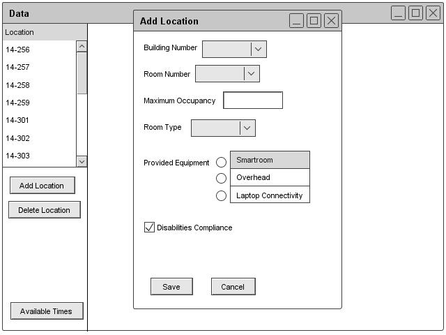
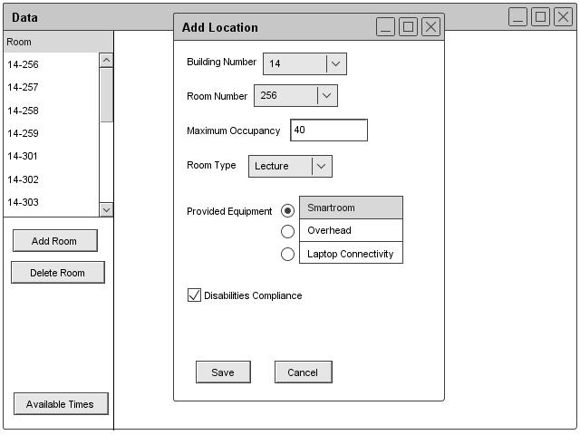
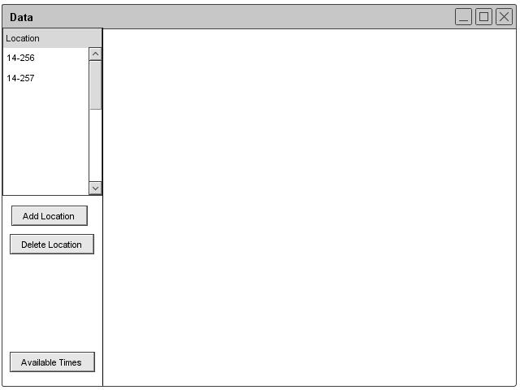
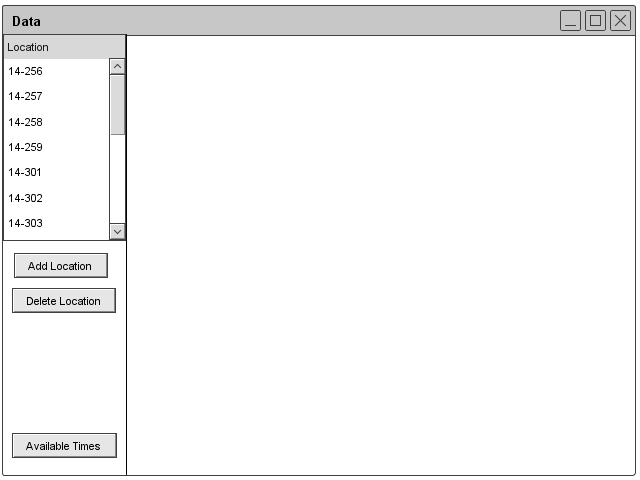
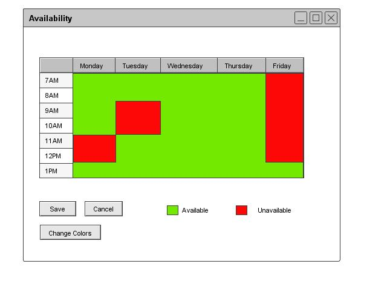
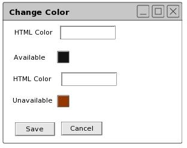

Section 2.3.3.1: Adding Location Information
The administrator adds a location by clicking the Add Location button under the room section of the Schedule header. The database window displays and the administrator can add location information. The location creation form has fields for the building number, room number, maximum occupancy, room type (lecture or lab), provided equipment, and disabilities compliance. These are the fields for the permanent database. The form in Figure 28 illustrates the add location form.

Figure 28: Add Location Dialog
Figure 29 illustrates the form with filled-in information.

Figure 29: Filled Add Location Dialogue
Figures 30 and 31 illustrate the database after two rooms and multiple rooms have been added.

Figure 30: Location Database

Figure 31: Filled Location Database
Available Times
The administrator can also click on the Available Times button to edit the available times. These times will not save in the database but will save for each schedule. The form brings up a weekly schedule similar to the one instructors use. The program shows the administrator a week view of a calendar. The administrator can then check off when the room is available. Once done, the administrator can click save. Figure 32 illustrates the availability dialogue.

Figure 32: Availability Dialog
The user can click the Change Colors button to customize the colors used in the Availability View. The user can add an html color code to change the colors for available and unavailable times in the previous window. Figure 33 illustrates the process.

Figure 33: Color Change Dialogue
prev: data-room |
next: room-edit |
up: data-room |
index: index